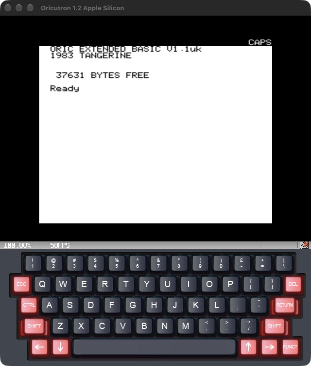

The Oric Atmos is back, on your Mac, iPhone and iPad
L'Oric Atmos revit sur votre Mac, iPhone et iPad
A native port of Oricutron 1.2, Peter Gordon's Oric-1 / Oric Atmos / Telestrat / Pravetz 8D emulator, for Apple Silicon Macs (M1, M2, M3, M4…) and iOS devices. Free and open source.
Un portage natif d'Oricutron 1.2, l'émulateur Oric-1 / Oric Atmos / Telestrat / Pravetz 8D de Peter Gordon, pour les Mac Apple Silicon (M1, M2, M3, M4…) et les iPhone / iPad. Libre et gratuit.

Features
Fonctionnalités
Mac
Native Apple Silicon app with macOS menus, drag and drop of .tap, .dsk and .sna files, “Open with” from the Finder, and a missing-ROM check at start-up.
App native Apple Silicon avec menus macOS, glisser-déposer des fichiers .tap, .dsk et .sna, « Ouvrir avec » depuis le Finder et vérification des ROMs au démarrage.
iPhone & iPad
Touch Oric keyboard, toolbar for tapes, disks, CLOAD and reset, and import of ROMs, tapes and disks from the Files app.
Clavier Oric tactile, barre d'outils pour cassettes, disquettes, CLOAD et Reset, import des ROMs, cassettes et disquettes depuis l'app Fichiers.
Keyboard
Clavier
Positional mapping: each Mac key presses the Oric key at the same place, so AZERTY and QWERTZ keyboards work. Clickable on-screen Oric keyboard.
Correspondance par position : chaque touche du Mac actionne la touche de l'Oric au même endroit, même sur un clavier AZERTY. Clavier Oric cliquable à l'écran.
Installation
Installation
Mac
- Unzip the download and drag Oricutron into Applications.
- First launch: right-click the app › Open › Open (the app is not notarized).
- Add the Oric ROMs (see below) via File › Open data folder.
- Décompressez le téléchargement et glissez Oricutron dans Applications.
- Premier lancement : clic droit sur l'app › Ouvrir › Ouvrir (app non notariée).
- Ajoutez les ROMs de l'Oric (voir plus bas) via Fichier › Ouvrir le dossier de données.
iPhone / iPad
- Sign and install the
.ipawith your own Apple ID, using a sideloading tool such as Sideloadly or AltStore — or build it with Xcode from theios/folder. - On the device: Settings › General › VPN & Device Management › trust your Apple ID.
- With a free Apple ID, reinstall every 7 days.
- Signez et installez l'
.ipaavec votre propre Apple ID, avec un outil comme Sideloadly ou AltStore — ou compilez-la avec Xcode depuis le dossierios/. - Sur l'appareil : Réglages › Général › VPN et gestion de l'appareil › faites confiance à votre Apple ID.
- Avec un Apple ID gratuit, réinstallez tous les 7 jours.
The Oric ROMs are copyrighted and are not included: copy basic11b.rom (Oric Atmos), basic10.rom (Oric-1) and, for disks, microdis.rom from an official Oricutron distribution.
Les ROMs de l'Oric sont protégées par le droit d'auteur et ne sont pas incluses : copiez basic11b.rom (Oric Atmos), basic10.rom (Oric-1) et, pour les disquettes, microdis.rom depuis une distribution officielle d'Oricutron.
Credits
Crédits
Oricutron is the work of Peter Gordon and its contributors — github.com/pete-gordon/oricutron. This Mac / iOS port is distributed under the same GNU GPL v2 licence. Thank you for this wonderful emulator.
Oricutron est l'œuvre de Peter Gordon et de ses contributeurs — github.com/pete-gordon/oricutron. Ce portage Mac / iOS est distribué sous la même licence GNU GPL v2. Merci pour cet émulateur formidable.